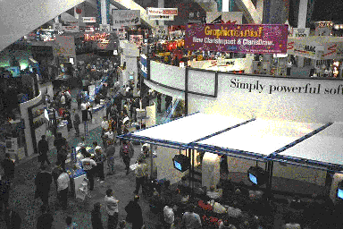
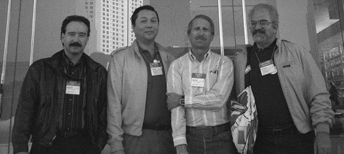
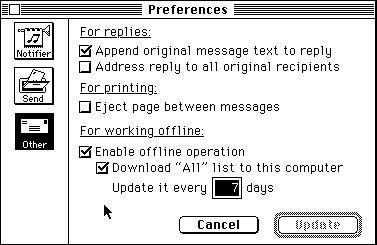
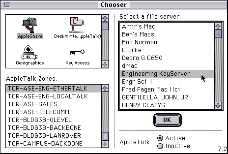

First Quarter, 1994
President's Column
Mike Quan
The December newsletter was well received with several people taking the time to comment on how useful it was. Unfortunately, since it was sent just before the Christmas break, some people may not have received our second electronic newsletter when they returned for the new year. If you did not get your copy, please send a request by e-mail to "ASACMUG" and we'll send you a copy.
This newsletter is the January/February issue because the January issue was so late, we decided to combine it with the February issue. This month, the newsletter will feature the MacWorld Expo which was held in San Francisco on Jan. 5-8. At least seven MUG members attended the four day event (along with over 60,000 other Mac enthusiasts) at their own expense and time. The exhibition is held 2-3 times a year, in San Francisco in January, Boston in August and this year in Washington D.C. on May 10-12 especially for those working for or with the government. If you can possibly attend, I encourage you to do so; you'll be amazed and glad you made it. Out of the seven members that attended, five were repeaters with with as many as six MacWorlds under their belts.
Although Apple's new PowerMacs were not announced, they were "seen" throughout the show. Apparently, just before the show, Apple gave developers permission to show their native applications running on pre-production hardware as long as they didn't show the unreleased computers. This meant that we could see the monitors but the CPUs were kept under wraps. The performance of the new machines was very impressive with speeds ranging from 3 to 10 times the performance of the fastest Macs currently available. The new PowerMacs are expected to be released in mid-March and will be featured in the next newsletter.
If you are interested in some special prices on Apple products check out the enclosures on Apple closeouts and refurbished products. Remember, the February specials must be ordered before the end of February and the March specials are only available during March.
Table of Contents
- MacWorld Expo Wrapup
- Macworld Trophies
- MacWorld - Transition to PowerPC
- Apple/Citibank Credit Card
- Free Software!
- Mail Etiquette
- Software Library Update
MacWorld Expo Wrapup
As mentioned in the last newsletter, the MacWorld Expo was held the first week of January in San Francisco. Over 60,000 people attended the show marking the first decade of Macintosh computing and ushering in the next generation of Macs based on the PowerPC microprocessor.
This issue contains short descriptions of interesting products and show events as seen by those at AlliedSignal who attended the show. It also contains a description of the contents of the ASACMUG Software Library and a description of how to access our Library.

Claris Booth at MacWorld
Trophies from the 1994
Expedition to MacWorld Expo
Ron Keating
Everyone who goes to MacWorld Expo in San Francisco brings back personal trophies. These are some of my trophies from the most recent exposition.
One of the nice things about computer stuff is the price is always dropping. Ever since I read Randy Singer's article "Which High Speed Modem?" in the Fall 1993 BMUG Newsletter, I dreamed of owning a Teleport Gold 14.4 kbps Fax/Modem from Global Village Telecommunication. It used the AT&T chip set that Randy said was so much better than the Rockwell one; it had the best Fax software, and, as Randy said, he never heard a complaint from a Teleport user. The only problem was the $369 mail order price. But with computer stuff you don't have to wait long until the price falls to what you are more willing to pay.
The special Mac World Expo price was less than $250, so I bought two of them. One for me and one for my girlfriend, so that we can Fax messages to each other. Besides, Michael Fraase in his book The Mac Internet Tour Guide says that to access the Internet by SLIP or PPP, you need to use at least a V.32 9600 baud modem, although he highly recommends a V.32bis/V.42bis 14,400 modem. Now, I am ready for the Internet. After using the modem for two weeks, I liked it so much, that I decided I couldn't live without one on each of my machines. I found a deal through Computer Town, a Massachusetts mail order firm with no California sales tax, that nearly matched the Mac World Expo price, and bought a third Teleport Gold to use with my office Mac. For this review, I will repeat part of Randy's BMUG article on the modem, although you really should read the entire BMUG Newsletter, which is excellent.
"This modem is the closest thing there is to a plug-and-play high speed modem for the Macintosh. It comes with everything that you need right in the box. It is reported to be dead reliable and many people find the included Fax software to be the easiest to use of any Fax software available for the Macintosh. ZTerm is included; so it isn't necessary to purchase it separately to obtain a data software package that includes the Zmodem protocol. I've never heard a complaint from a teleport user. Ask them how well it performs and they just reply that they plugged it in and never had a complaint afterward. I have to assume then that this modem rarely has a problem connecting to services even when encountering bad phone connections. Global Village's service is also reputed to be impeccable. A unique and valuable feature of this modem is that it will allow you to continue to do your work in another application while simultaneously sending or receiving a Fax."[That last comment sounds like a bit of TQS to me.]
In addition to the two modems, I bought a copy of Fontographer and four books at Mac World Expo. The Expo is an excellent place to browse for books. This years finds were (1) The Little Mac Word Book, by Helmut Kobler; (2) ICONS for the Masses, by David Lai, with over 1,000 icons and ICON Wizard software on disk; Photoshop for Macintosh, by Elaine Weinmann and Peter Lourekas, and last, but not least the Internet Starter Kit, by Adam C. Engst, with a disk that has all of the software needed for MacTCP access to the Internet.
The last book brings me to something that is getting a lot of attention lately. That is the Internet. Armed with the two Internet books mentioned above and the article in the Spring 1994 BMUG Newsletter (also available at MacWorld Expo) titled "The Last Internet Article You'll Ever Read (On paper anyway)" by Andrew Tonkin, I hope to be hooked up to the Internet graphically, clicking and dragging the familiar Mac way, in time for the next ASACMUG newsletter with my own PPP account. As Andrew says in his article, "get out there and get on the Internet...and stop reading about it already!"
One of the best things you can do with your money is to join BMUG. The BMUG Newsletter alone is 544 pages, contains 78 full length articles, and is published twice a year; it's well worth the $45 annual membership price. Call (510) 549-BMUG for information or get a copy of the BMUG Order Form from me to join.

AlliedSignal at MacWorld: (L to R)
Kelly Berger, Mike Quan, and Tracy Johnson, all of ASE;
Dick Lerner, GED.
MacWorld - Transition to PowerPC
Alex Morando
This year's MacWorld Expo in San Francisco had the usual elements of any computer trade show - large booths, software upgrades, free pins, bags for carrying off product literature and if you're lucky, free 170 meg LaCie hard disks. However, there was a pervasive air of both hope and uncertainty as Apple begins the transition to the PowerPC processor for all future Macintosh computers. Software running on the PowerPC was demonstrated; it lived up to it's claims of being up to 4 to 10 times faster than the fastest Mac and PCs of today. Over 100 PowerPC Macs, discreetly covered in plain brown wrappers or hidden under booths, were on the show floor for users to try out. The first three Power Macintosh computers are due to be released in March, with prices ranging from $2000 for a 60 MHz CPU to $4500 for an 80MHz CPU. All prices include 8 megs of RAM (minimum), monitor, and keyboard.
PowerPC Conference
One day before the show, an entire day was dedicated to the PowerPC and how it would impact individual users, small businesses, large businesses, and educational markets. Although the PowerPC promises large increases in speed and overall performance, the biggest concern was for compatibility with existing software and the existing environments of prospective users. The feeling at the end of the show was that although software written for PowerPC is a good reason to buy PowerMacs, a better and more compelling reason is to be able to run the existing Macintosh software base and to minimize the transition difficulties in bringing one to your home or office.
RAMDoubler
One of the best products of the show was RAMDoubler by Connectix. As an Extension, it modifies the way the Mac handles memory and effectively doubles it. For example, if you have 5 megs of RAM on your Mac, adding RAMDoubler will effectively give you 10 megs of RAM. However, if you use only one application (like Photoshop or XPress) for which you dedicate large amounts of RAM, it will not work. RAMDoubler is suited for those who work with many applications and transfer data between them. It is an all-or-nothing proposition : if RAMDoubler does not work for you, Connectix offers a 30-day money back guarantee.
Fodor's '94 Travel Manager
While not strictly for Macintosh, this Newton application may be useful for people on the go. For each major city in the U.S., it shows over 500 locations of special attractions, restaurants, travel routes, and other information essential for the business or personal traveler. You simply click on where you are and click on where you want to go; Travel Manager will find out the best route. Write the word "Seafood" and it will list seafood restaurants, along with location, price, and rating (according to Fodor). [There was a lot of Newton activity at the show, and over 100 Newton applications were being shown in the Apple booth. Apple and Sharp have announced total sales of 100,000 Newtons during the period from August-December 1993.]
DayStar PowerPro(TM)
Apple has announced both logic board and PDS (processor direct slot) card upgrades for certain Macintosh models. Apple has also licensed it's PowerPC ROMs to DayStar for an additional line of PowerPC accelerator cards. Many of these cards are designed for Macs for which Apple is not planning to supply upgrades. This way, many of those who own older machines like the IIcx, IIci, and Quadra 700 can enjoy the benefits of PowerPC. One benefit of the DayStar PowerPro is that the speed is independent of the motherboard, while the Apple card can only run at twice the motherboard frequency. DayStar cards will run at their rated speed independent of the motherboard. Prices will start at $500 for a low-end 50MHz model; prices for other cards will be set by March.
Replica
Electronic document interchange is made easier by Replica(TM) by Farallon. It is a method by which documents can be exchanged between different people without all of them requiring to have the same application. Available for both Macintosh and Windows, documents can be reviewed, annotated, and assembled across a network. Font problems and picture formats are resolved by having font and picture information embedded within the Replica document. Replica competes with two other electronic interchange technologies: Adobe Acrobat(TM) and Common Ground (TM). Compared with Acrobat, Replica has modest RAM and hard disk requirements, and does not require you to replace your TrueType fonts with ATM Type 1 fonts. ASACMUG plans to use Replica in future issues of this newsletter.
DeltaGraph Pro 3.0
The latest upgrade to the leading charting program by DeltaPoint has many added features, chart types, and an overhaul of the user interface. Users who upgrade from 2.0 are advised to take some time learning the new version. Many of the ways in which graphs are made are different. For example, since there are now so many chart types, a Chart Advisor guides you in creating your chart, asking the type of audience, the amount of detail, the kind of data, and the complexity of the chart. Also, the modal dialog boxes shrink when you choose "Show", so you can actually see what is happening to the chart. The program also has a whole set of new features: a command bar, AppleScript support, multiple documents, and charts useful in TQM (Pareto, range, histogram, and ogive).
e*World
Apple has created a new division, Apple Online Services, to create and operate a new online service called e*World. Designed to compete with other services like Compu$erve and America Online, e*World offers a graphical interface whose metaphor is that of a village. Different areas of the village mean different things: a house with picket fences contains your personal files and settings; the mail truck delivers your electronic mail. A shopping center allows retailers to offer their products, and an office building offers banking and other financial services. Other services will be available as e*World expands. It is estimated to be operational by March for Macintosh and by May for Windows. The monthly fee will be $8.95 per month with two free hours. Additional time will be charged by the minute.
BeingThere/BeingThere PRO
A lot of videoconferencing tools were shown at MacWorld, but this product from Intelligence At Large is interesting since it is a software-only solution. While other solutions require the purchase of expensive boards and hardware, BeingThere only requires a camcorder for people that want to be "seen"; others can participate via the built-in microphone or via the electronic white board for markup and discussion. Using AV Macs is very effective in this case since camcorders can be directly plugged to the back of the Mac. Each person participating in the teleconference is shown in a small window; those without cameras are shown as generic people icons or as a static picture. Information can be exchanged via video, audio, a common white board, or through shared documents (i.e. allowing others to see that Excel spreadsheet you've been working on). There is, of course, a tradeoff between cost, quality, and response time in using BeingThere. It is very useful for small, informal working conferences; it is less useful for large presentations to the CEO.
Apple/Citibank Credit Card
Mike Quan
One of the most exciting announcements was the introduction of the new Apple Citibank credit card. Any purchases using this card will generate a credit that may be used toward Apple Computer products. The credit ranges from 2.5% for the first $3,000 of purchases and 5% for additional purchases up to $500 per year. Credits are good for 36 months so a person could accumulate up to $1500 worth of credits. Unfortunately, there is an annual fee of $20 which is waived for the first year. Personally, I've checked my family's credit card habits and I should be able to get the maximum credit each year so the annual fee is not a problem. If you wish to get an Apple VISA or Apple Mastercard card, call Citibank at 1-800-374-9999 ext. 30.
Free Software!!
Well, almost free. ASACMUG has a free copy of Quicken 4.0 for the Mac. Quicken is a financial managment program that can keep track of bank accounts, investments, and tax liabilities. It offers a graphic interface and is very easy to use.
We have one copy for anyone interested in writing a review for this newsletter. Use the software and tell us what you think about it and how it can be made better. Due to logistical reasons, only those in the Torrance facility are eligible, and names will be taken on a first-come-first serve basis. To enter, please send Email to (Morando, Alex). You will be contacted if you are selected. Thank you.
Mail Etiquette
Those of you who receive this newsletter electronically may have noticed messages sent to all Microsoft Mail users regarding user group activities or other broadcast messages of a non-broadcast nature. ASACMUG apologizes for any troubles that may have been caused by careless replies to our inital mailing.
For those familiar with Microsoft Mail, the default option is the Reply All button; it is often too easy to just hit Reply All without realizing that doing so will send your message to all recipients of the original message, causing a "network avalanche" of messages to all users on the AlliedSignal mail network.
This problem can be remedied by first determining the audience of your message. If it is not a global broadcast, you can do one of two things:
- Hold down the option key in Microsoft Mail. You'll notice that the Reply All button changes to a Reply button. This will send your message only to the original sender and not all recipients.
- You may edit your preferences to send your replies only to the sender [Note: this procedure is not in compliance with official Email policy which is to make Reply All the default choice when sending replies]. You can do this by selecting Mail...Preferences from the menu. Click on the Other icon and the following window will appear:

Uncheck the checkbox titled "Address reply to all Original Recipients"
ASACMUG Software Library Update
Listed below are some interesting items now found in the ASACMUG software library. This is not a complete list by any means. Send email to (ASACMUG) if you wish to obtain a listing of all available items. If you are connected to the ASAC network, you can obtain the software as follows:
- 1) Open the Chooser, select the TOR-ASE-ENG-ETHERTALK zone, and double click on the Engineering KeyServer file server (see below):
- Logon as Guest and click on the OK button.
- You are now at the top level of the ASACMUG BBS. All software can be found under the Software Library folder.

Almost all of the files are in self-extracting format, usually denoted with a .sea at the end of the filename. Just copy the files you want from the BBS to your desktop and double-click on them. Files without a .sea suffix can be decompressed using Stuffit Expander, found in the Public Domain/Shareware:Utilities folder.
And now the list:
Under the Anti-Virus folder is Disinfectant 3.3, which is the latest version of the best anti-virus utility for the Macintosh.
ASACMUG is authorized to distribute certain Apple system software; it can be found under the Apple Software folder. As an example, we have the HyperCard 2.1 Player which allows you to run HyperCard stacks, QuickTime 1.6.1, Apple's multimedia extension allowing you to play movies and sounds, and System Tune-Up 1.1.1 which fixes bugs in Systems 7.0 and 7.0.1.
In the ASACMUG Files folder is an (unofficial) AlliedSignal startup screen. Just name this file "StartupScreen" and place in your System Folder. Reboot your Mac and see what happens!
The largest folder in the BBS is the Public Domain/Shareware folder. Under the Applications subfolder are some programs that are very good for doing specific jobs. We have BBEdit Lite 2.3.2 which is an excellent TeachText replacement and HP calc! 2.0, which replaces the Calculator desk accessory. It is useful for those familiar with RPN notation.
Under the Data subfolder, we have the ASE Phones HyperCard stack, listing the names, locations, and phone numbers of all ASE employees. The file MacHistory.sea is a good pictorial history of every Macintosh ever produced
The Utilities subfolder has a lot of interesting programs that let you customize your Mac for more efficiency or just to make it fun to work on. Default Folder 2.46.sea allows you to quickly navitage folders while in the Open/Save dialog box. Décor.sea puts pictures on your desktop instead of boring repetitive patterns. Stuffit Expander 307.sea is an all-purpose decompression utility that can decompress Stuffit, Compact Pro, and AppleLink files; simply drop the compressed file onto the Stuffit Expander icon and it will do the rest.